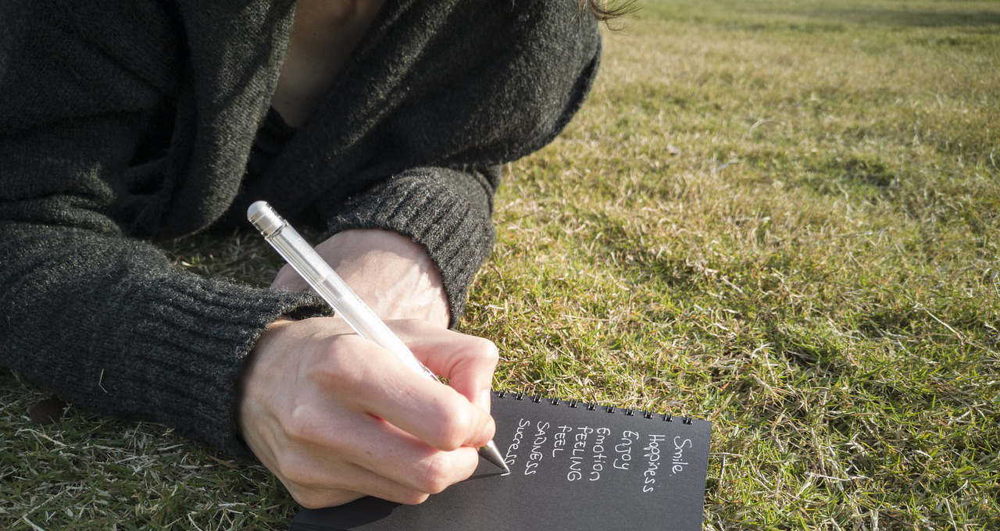

東京では公共機関の業務システム開発に携わっていました。私の所属していた部署は品質管理を担当していたため、自分の手で設計したり実装したりすることはなく、納品された設計書が仕様通りに作成されているかチェックを行なっていました。
品質管理の仕事は地道なものですが、その会社の良心と言い換えることができると思います。経験も知識もない社会人なりたての私にとって、公共性の高いシステム開発に携われることはとても幸せなことでした。
しかし、月日が経ち職場に慣れてくるにつれて、「私は何もしていないのでは」という気持ちが大きくなっていきました。その機関の利用者でもなくシステムのユーザーでもなく上長や理事長の顔色を伺うことへ割かれる時間に違和感を感じました。
何もしなくても仕事となってしまう職場がこの世にはあります。お金が稼げればいいと考える人もたくさんいます。でも私はそんなふうに生きたくない。
一度きりしかない人生をどのように生きるか。仕事を通して誰かの生活を豊かにする喜び。素敵な商品やサービスがこの世にあること。これらは私が大切にしていたいものたちです。
今はまだ難しくても、人のためになることがしたい。そのために現職を離れて、新しいことにチャレンジしたいと思い転職を決意しました。

毎朝池袋から電車に乗り渋谷で乗り換えて職場へ向かいます。ゆっくり歩いていると後ろから蹴られたり舌打ちをされたりすることがあります。
東京は便利な街です。しかし物質的な豊かさが心の豊かさになかなか結びつきにくい街でもあります。立ち止まってじっくり考えられる場所を私はずっと探してきました。
2019年3月、仕事に悩み、昔お世話になっていた方の元へ向かいました。それが京都でした。それ以来1ヶ月に1度のペースで訪れるようになりました。
東京では24時間営業のお店がたくさんありますが、京都では21時にはほとんどのお店が閉まっています。京都で出会う人には皆、自分があるように思います。
プライドを持って仕事をし、自分と他者に誠実に生きること。京都は「こんな人になりたい」「こういうふうに生きたい」と思えるものの多い街です。
学習の進捗は下記のGitHubで確認できます。
このサイトはテンプレートを元にしています。動きの多いものはまだまだ難しいですが、HTMLとCSSの文法や構造は理解しています。
言語学習の入り口として学習中。基本的な文法は習得しました。WEB開発の実務経験がないので、自分でちゃんと組めるようになりたいです。
現場で使用される言語はJavaでしたが私は書くのではなく読む専門でした。日常的に触れてはいますがPython同様自分で書けるようにと。